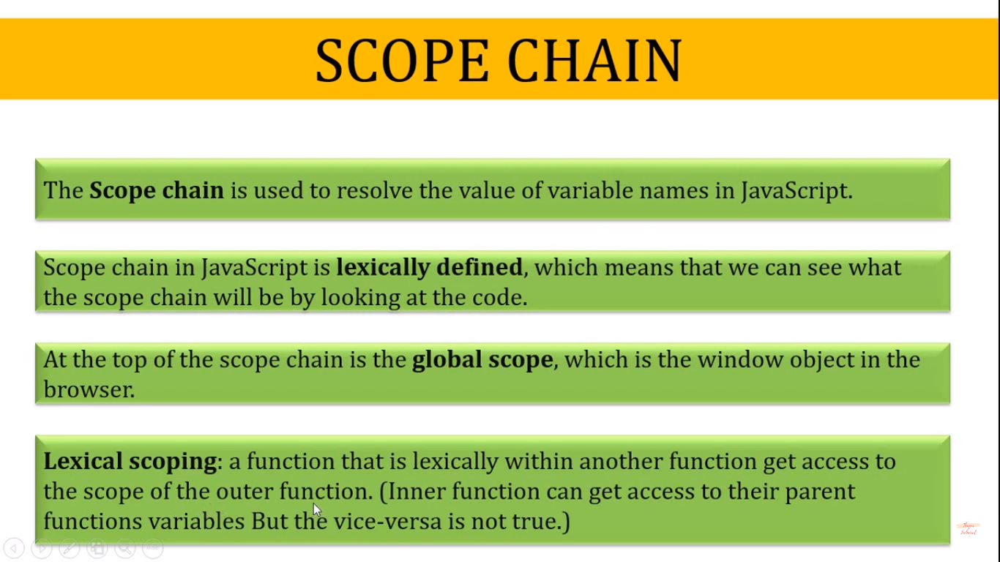
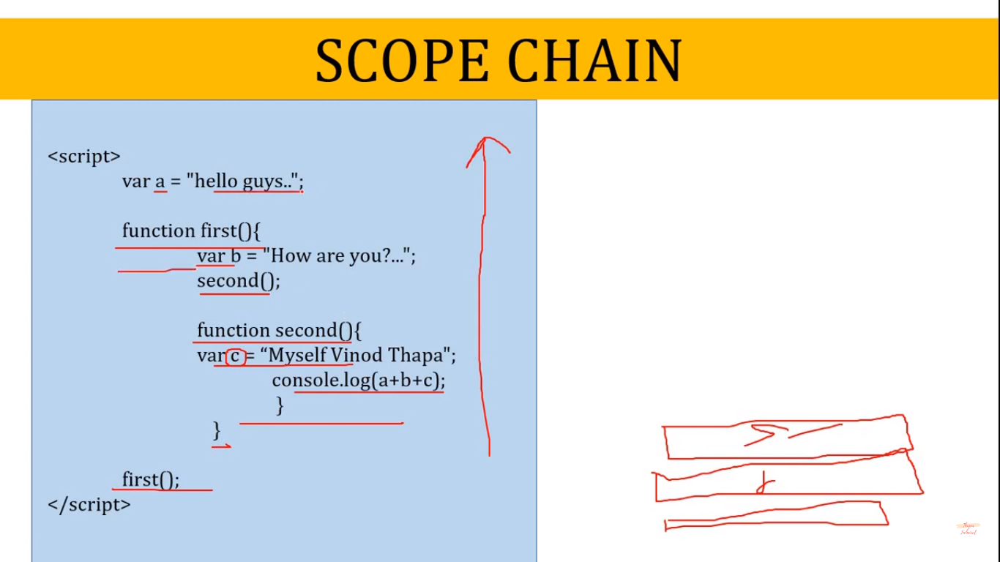
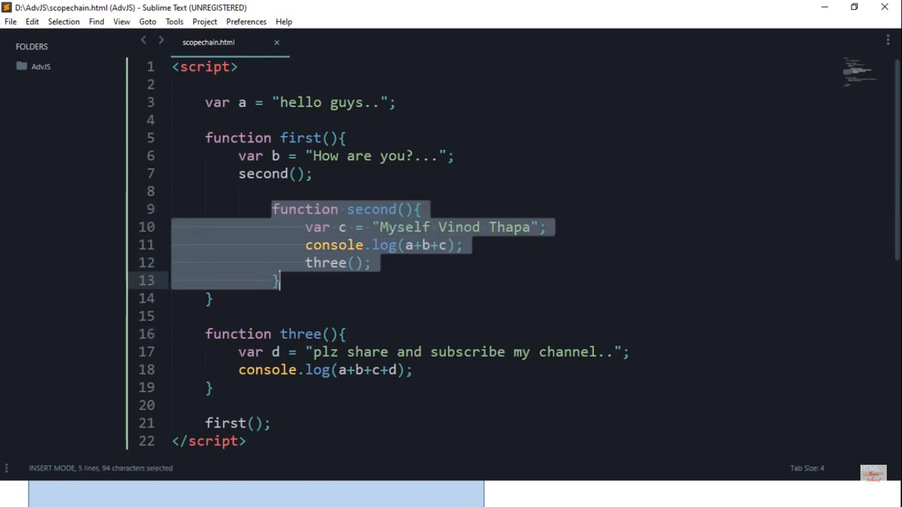

every function gets it own execution context
lexically down to top phele inner function parent ko pucheyga for variable and then global stack if not gets varibale he wants
every function have its own scope for function three to work we need too pass arguments


